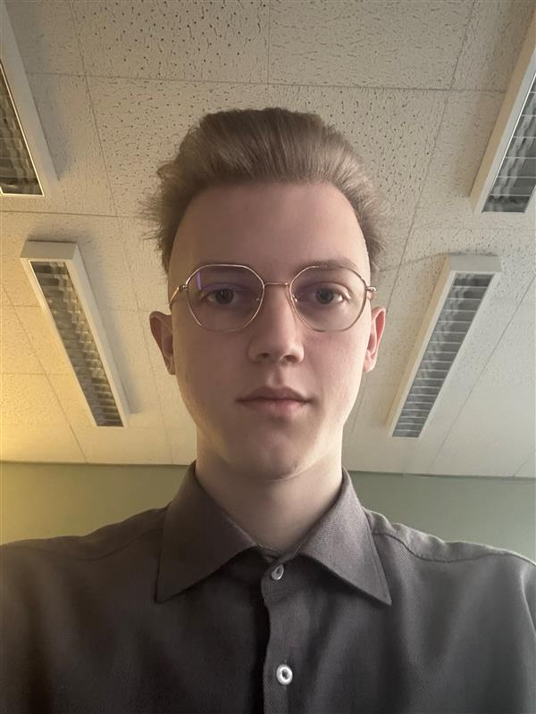

Maksym Zdorovtsov
Email : Zdorovtsov.maxim@gmail.com
Téléphone : +41 765142961 / +41 795115304
Adresse : le Genevrier 6, 2950 Courgenay
Éducation
- Gymnase des relations internationales, Kiev, Ukraine (2011-2022)
- Université de technologie et design, Kiev (2022 - 2023) - Spécialité "Chef de projets informatiques"
- Avenir Formation PréFor, Porrentruy (2022-2023)
- École de culture générale, Delémont (2023-2024)
- Ecole des Métiers Techniques, Porrentruy (à partir d 2024-)
Expérience professionnelle
- Commerce de détail/gros : Marché écologique, masques médicaux
- Construction : Montage/démontage de meubles, manutention
- Animateur pour enfants : Programmes d’animation
Compétences
Qualités personnelles :
- Qualités de leadership
- Capacités de communication
- Créativité
- Approche polyvalente des problèmes
Compétences techniques :
- HTML - Débutant
- Python - Débutant
- MySQL - Débutant
- C++ - Débutant
- Adobe Photoshop/Express - Intermédiaire
- Microsoft 365 - Expert
- Sweet Home 3D - Expert
- FreeCAD - Intermédiaire
Intérêts
- Sports : Haltérophilie, tennis de table, karaté Kyokushinkai, natation, échecs, photographie, vidéographie.
Langues
- Français - B2
- Anglais - B2
- Allemand - A1
- Ukrainien - C2
- Russe - C2